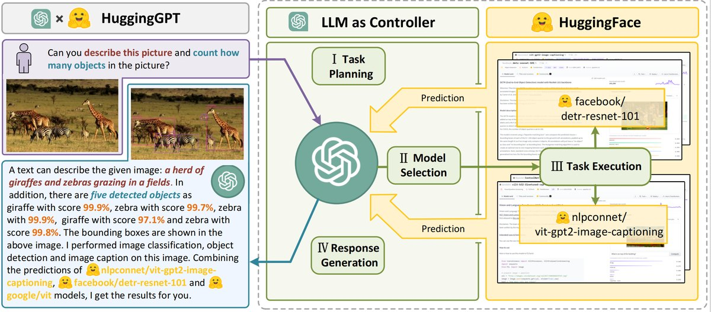

项目
实验室开源项目，均托管于 github.com/ZJU-REAL。


HuggingGPTNeurIPS 2023
—以大模型作为任务调度核心，以 Hugging Face 上的各类模型作为执行单元：系统完成任务拆解、专家模型选择、执行与结果汇总，以自然语言为接口调用各类 AI 模型。
智能体在上下文中发现、积累并复用技能，再经由强化学习将技能内化至模型参数。在 ALFWorld 与 Search-QA 上显著优于标准强化学习。
带门控机制的自蒸馏智能体强化学习，是首个将智能体强化学习与 on-policy 自蒸馏统一于同一代码框架的开源项目，已有多项后续工作基于其展开。
以高斯分布建模点击位置的奖励，取代“命中 / 未命中”的二值稀疏信号，引导策略实现更精确、更稳健的元素定位。
半在线强化学习：利用离线轨迹模拟在线训练，提升 GUI 智能体的多轮交互能力。UI-S1-7B 在半在线与在线指标上均在同规模开源模型中取得最佳结果。
持续更新的 GUI 智能体论文清单与资源汇总，涵盖训练、元素定位、数据集与评测基准，并每周整理 AAAI、ICLR、NeurIPS 等会议的新录用论文。
没有符合该筛选条件的项目。